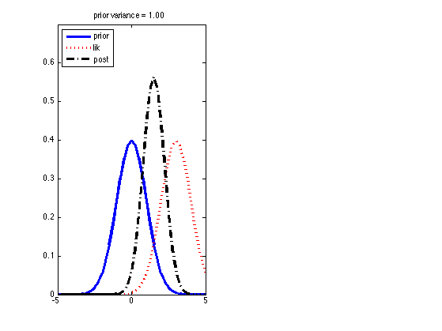
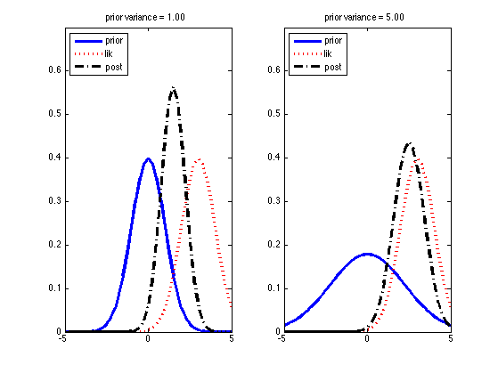

Infer the mean of a 1D Gaussian
Contents
priorVar = [1 5];
Sigma = 1;
figstr = {'gaussStrongPrior', 'gaussWeakPrior'};
X = 3;
[styles, colors, symbols, plotstyle] = plotColors();
figure;
for i=1:numel(priorVar)
prior.Sigma = priorVar(i);
prior.mu = 0;
xbar = mean(X);
n = numel(X);
lik.Sigma = Sigma;
lik.mu = xbar;
S0 = prior.Sigma;
S0inv = 1./S0;
mu0 = prior.mu;
S = Sigma;
Sinv = 1./S;
Sn = 1./(S0inv + n*Sinv);
post.mu = Sn*(n*Sinv*xbar + S0inv*mu0);
post.Sigma = Sn;
Now plot
subplot(1,2,i)
hold on
xrange = -5:0.25:5;
ms = 10; lw = 3;
style = [styles{1}, symbols(1), colors(1)];
plot(xrange, exp(gaussLogprob(prior, xrange)), plotstyle{1}, ...
'displayname', 'prior', ...
'linewidth' , lw, 'markersize', ms);
style = [styles{2}, symbols(2), colors(2)];
plot(xrange, exp(gaussLogprob(lik , xrange)), plotstyle{2}, ...
'displayname', 'lik', ...
'linewidth' , lw, 'markersize', ms);
style = [styles{3}, symbols(3), colors(3)];
plot(xrange, exp(gaussLogprob(post , xrange)), plotstyle{3}, ...
'displayname', 'post', ...
'linewidth' , lw, 'markersize', ms);
set(gca, 'ylim', [0, 0.7]);
legend('Location','NorthWest');
title(sprintf('prior variance = %3.2f', priorVar(i)));
box on;
 
end
printPmtkFigure('gaussInferParamsMean1d');